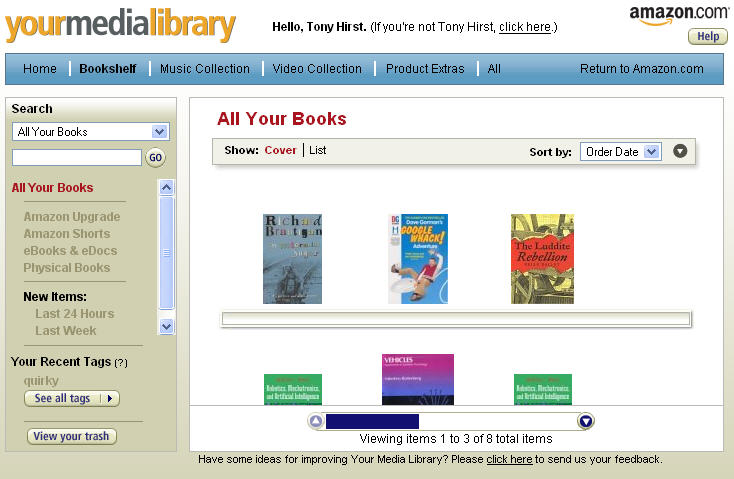
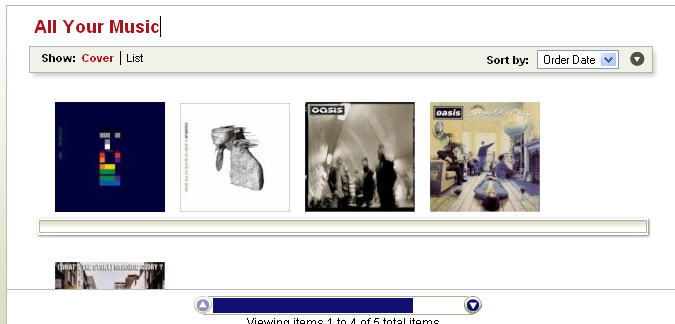
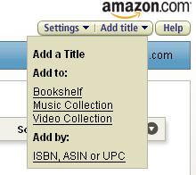

Stumbling around looking for information about Amazon eDocs (about which maybe more another day) I came across an interesting post from ResourceShelf about Amazon's New online Reader and Media Library. Again, the online reader/search inside service I'll maybe post about another day, because what caught my interest was the write up about the Amazon Personal Media Library (Richard Akerman also spotted the Media Library just now, as well as a tidy URL for the service: www.amazon.com/gp/library/).
An Amazon.com (not .co.uk etc.) service, the Your Media Library service:
... is a secure location to store information about all of your media purchases as well as access your digital products, such as eBooks, eDocs, Amazon Upgrades, Amazon Shorts, the free electronic user manuals that come with some products, and free music files and video clips that are available with select CDs and other multimedia products.
This particularly caught my eye because the library interface is built around a bookshelf metaphor (something regular readers will know I've been tracking lately, e.g. here, in respect of ejournal OPML feeds and here, in respect of library books).

A similar display style is used for media items, using cover artwork:

Items can be added based around a search, or from ASINs/ISBNs etc.

If I was an Amazon.com customer, then any of my future purchases (and maybe my previous ones?) could be added automatically to my media library. What would be really useful for me here in the UK though (and assuming that the Media Library won't be available to .co.uk cusotmers in the near term) would be the ability to upload all the purchaces from my Amazon.co.uk account to my media library on the .com site.
A feed of items from my Media Library would also be handy (cf. Amazon wishlist feeds, as would be the ability to upload titems to my media library from a feed (e.g. from LibraryThing or my OU library current loans feeds (maybe this would have to be on a tempoary shelf?).
The Media Library allows tagging, and display of items tagged in a particular way, but I don't think there is a way of showing several separate shelves on different themes.
Nor does there appear to be a way of automatically viewing wishlist items on a wishlist shelf.
Just in passing, this additional, related service also caught my eye: Amazon Upgrade, which supports "upgrading" of phyisical (i.e. print) books with an online version:
Upgrading Your Physical Books is Easy If you buy a book that is in the Amazon Upgrade program, you are given the option to upgrade to online access at the end of the purchase process.
This is something I'm going to have to mentally mix in with my thinking on O'Reilly's SafariU for potential OUseful use! ;-)
And I think I'm also going to have to do a version of OU Course Catalogue Takes Lead from Amazon? that considers ways in which the Library catalogue pages could ape Amazon (as opposed to Amazon-Supported Library Services) and maybe also a version of Customer Participation at Amazon.com looking at how OCI might foster community spirit...
Posted by ajh59 at July 2, 2006 11:50 PM